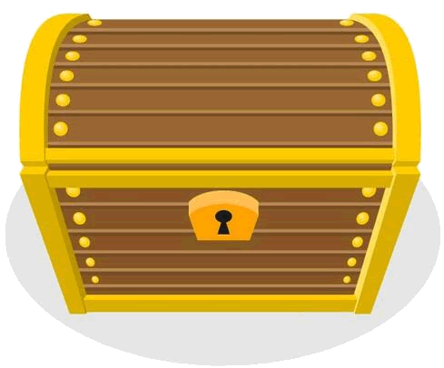

CSS Layout cheat sheet
display
While we mentioned this earlier, the display attribute determines how the block will be displayed.
This line will be overlapped with the inline tagged element.
Here is an inline element with padding and margins.
This line will not be overlapped with the inline-block tagged element.
Here is an inline-block element with padding and margins.
Flex
The flex display option allows you to control the positioning of several elements in a container element.
- The gap attribute lets you add a gap between elements
- can also have spacing using justify-content using the following:
- normal
- space-between - extra space used as gap between
- space-around - as between but also gap on edges
- space-evenly
- stretch
- align-items
- flex-direction - can be row, columm, reverse-row, reverse-column
- flex-wrap - can be wrap or nowrap
can apply to items being used as well, with the primary reason for doing this is for the flex attribute flex: grow shrink basis which can also use individual attributes
- flex-grow: weight
- flex-shrink: weight
- flex-basis: size

Grid
The display: grid layout lets you specify a grid made up of rows and columns. Use grid-template-columns attribute followed by a series of sizes for each column. The new fr measurment will take the width and divide it based on the total number of fr units.
As you often want columns repeated you can use the repeat(count, format) function. The count is the number of times to repeat the specified size(s) so you can have something like repeat(3, 1fr 2fr 2fr).
You can use grid-template-rows for doing the same thing with rows. If you want more flexible column or row counts you can set one of the templates to auto by using grid-auto-rows or grid-auto-columns. You can also have gap.
Can also use a template by using the grid-template attribute. This lets you have multiple rows of strings that describe the layout with short text descriptions specifying what component appears in that grid tile. You let css know that an element belongs at that location by having a grid-area block that uses the name you used in the grid. For example, the dice grid below uses the following template:
". thd thd thd"
"lhd die die die"
"lhd die die die";
The thd and lhd sections have classes that use grids to define a row or a column (flex could also have been used here). The dice section is also a grid, but a 3x2 one holding dice. The result of all of this is below.
column 1
column 2
column 3
row 1
row 2
Multiple columns
One handy feature that CSS has for layouts is the columns attribute. It lets you specify that you want the text to be divided into multiple columns by using columns-count.
You do not have control over what is put into each column, instead CSS uses a newspaper or magazine approach of filling each column with as much text that will fit before going to the next column. The column-fill attribute with auto being default, balanced trying to split text evenly. Balanced can have less in the final column so balance-all forces all columns to be equal.
The size of the columns will be dependent on the width so if not in a container can vary. You can force a specific size using column-width attribute.
Finally, the gap can be controlled by setting column-gap size style color.
Floats
A common occurrence in magazines and newspapers is wrapping text around images.

This can be done in css by using the float attribute. Float has left or right options so you can float objects to the left or to the right.
usually the object to be floated is an image but it can be any element that you want. You can have multiple floats at the same time, with them forming a line if on the same side.
You can also skip over the rest of a float's section by using the clear attribute which lets you clear left, right, or both. This can be done as part of any tag, and is one of the rare cases I use inline styles. If you want a float to stay within a div, you can also use the overflow property.
Position
This is some text within a div that has been set as relative. You will notice that unlike floats, any text that a positioned element overlaps is covered. Thankfully, I made the color of the absolution positioned box transparent by taking advantage of the alpha channel. The top, bottom, left, right attributes are used to position an element. The type of positioning is determined by the position attribute as follows.
- relative to parent box
- absolute positions based on the first relative positioned container, with the root (document) being the last option.
- fixed is always based on root
- sticky sticks to indicated relative position but tied to container so if container goes off screen so does it.
As you can position several boxes at the same time, there is a z-index
Media Queries
To properly take advantage of media queries, you need to have a meta element in your header:
This then allows you to take advantage of the @media type (condition: value) rule that lets you adjust CSS settings based on properties of the device you are using. The types are all, screen, and printer. There were other types but most of those have been depreciated. The condition would then be the property you are checking for, with min-width being the commonly used one as it lets you know the size of the display. While px is often used for making size decisions, pt or is also useful. The value then is the value you wish to use. Here is what I used for this page:
@media screen and (min-width: 8.5in) {
font-size: 1.6rem;
}
@media screen and (min-width: 12in) {
font-size: 2rem;
}